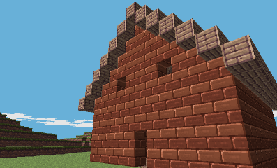
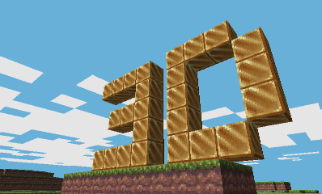
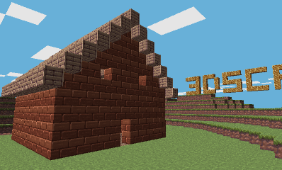

3DScraft
3DScraft is a 3DS homebrew adaptation of the popular game Minecraft. At the moment it is akin to a very basic version of Minecraft's creative mode : you can run around, fly, destroy blocks, place blocks, all in an infinite world generated procedurally in real time. All modifications made to the world are saved to the SD card so that progress isn't lost. Best of all, the game can run in stereoscopic 3D and it looks, like, really cool.
3DScraft is being made by smea alone in his spare time and is in no way associated with Minecraft, Mojang or Microsoft.
3DScraft's full source code is available for free on github.
You can follow smea on twitter.
Download
3DScraft.zip v141120
(NINJHAX-compatible version)
Instructions
3DScraft being a homebrew application, it requires a homebrew-enabling 3DS exploit to be run. Currently, the only way to do so on all 3DS consoles (2DS and New 3DS included) and firmware versions in the 4.0-9.2 range is NINJHAX. NINJHAX is being released on November 20th and requires that the user own Cubic Ninja, a 3DS game.
Installing 3DScraft to your NINJHAX-enabled console is as easy as installing any other homebrew application. More specifically, simply download 3DScraft.zip (link to the right) and extract its contents at the root of your SD card. That should be enough, but to be safe, you should make sure that you have a directory named SD:/3ds/3dscraft/ which contains the following files : 3dscraft.3dsx and 3dscraft.smdh.
3DScraft world files should also be saved to this SD:/3ds/3dscraft/ folder. They will have .world as an extension.
Screenshots

- 
- 
- 
Features
- Ability to add and remove blocks
- Real-time infinite world procedural generation
- World modifications saved and loaded to/from the SD card
- Crappy lighting
- Crappy bottom screen
- Some blocks !
- Screenshots !
- 3D !
Controls
- Circle Pad : move around
- C-Stick (N3DS-only) or Touch Screen : look around
- R/ZR/DOWN : place/destroy block
- SELECT : switch between create and destroy mode
- L : jump
- UP/ZL : fly
- A/B : change lighting
- START : exit
Special thanks
- eld for his awesome textures
- Forstride for his awesome logo
- everyone at mojang for creating and maintaining minecraft
- boomboombass for the awesome website made under such short notice
- everyone helping make the 3DS homebrew scene a reality, especially those working on GPU stuff, including but not limited to yellows8, plutoo, fincs, StapleButter and neobrain !